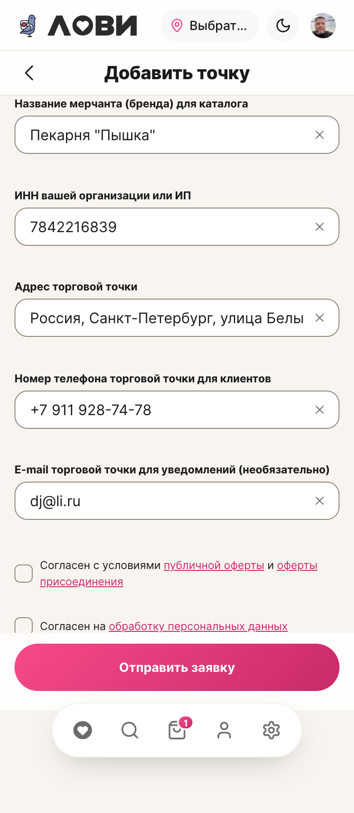
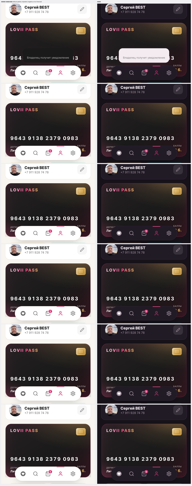

Поля формы получили видимый бордер, список подсказок адреса больше не выскакивает при предзаполнении; палитра уведомлений приведена к норме AA в обеих темах.
| Что | Было | Стало |
|---|---|---|
| Рамки полей | бордер --border-normal-subtle (почти не виден) | --border-normal-strong — токен ДС «видимый бордер контролов» |
| Подсказки адреса при предзаполнении | список раскрывался вверх и налезал на шапку | поиск идёт только при ручном вводе |
| Заголовок «Добавить точку» | был, но терялся под списком подсказок | виден всегда |
| Тон | Светлая: было → стало | Тёмная: было → стало |
|---|---|---|
| Негативный | 3.43 → 7.28 | 4.24 → 5.49 |
| Ошибка | 4.09 → 6.67 | 5.13 |
| Финансовый | 4.17 → 5.70 | 2.75 → 7.06 |
| Важный | 4.18 → 5.69 | 6.99 → 7.82 |
| Положительный | 4.78 → 5.55 | 7.30 → 7.74 |
По замерам все тоны читаются в обеих темах. Если конкретный случай всё ещё сливается — нужен скрин/тон, чтобы добить точно.


По канону название экрана живёт в шапке (AppPageHeader title=…). В форме заявки шапка была пустой, а заголовок лежал отдельным неоформленным <h1> в контенте — отсюда «непонятная» пустая зона под шапкой.
| Экран | Было | Стало |
|---|---|---|
| Добавить точку | шапка без названия + h1 «Добавить точку» в контенте | AppPageHeader title="Добавить точку", отдельный h1 убран |
| Статус заявки | шапка без названия | AppPageHeader title="Заявка" (состояние остаётся в контенте) |
Замер: шапка 56–145px, форма начинается на 161px (зазор 16px) — лишних блоков и больших пустот нет.
На экране заявки сабхедер был 89px вместо канонных 49px: он стоял внутри сетчатого <main> (grid + gap 16px) и растягивался по строке сетки. В каноне (ProfileWallet, Перевод) сабхедер стоит вне контентного контейнера.
| Экран | Высота сабхедера было → стало |
|---|---|
| Добавить точку | 89px → 49px |
| Статус заявки | 49px (вынесен вне main для консистентности) |
| Счёт и операции (эталон) | 49px |
Дополнительно просканировал все экраны с сабхедером: дефект высоты был только здесь. Подпись поля приведена к канону приложения — «E-mail» (как в настройках и на экране статуса).
| Что | Стало |
|---|---|
| Кнопка «Отправить заявку» | на всю ширину (главное действие формы) |
| Поле адреса | крестик очистки, как у телефона и почты |
| Подпись поля | «E-mail» — как в каноне приложения |
Осталась одна мелочь: длинный адрес в однострочном поле визуально обрезается (это поведение поля ввода; при желании вынесем адрес в отдельный блок). Других дефектов ревью не находит.